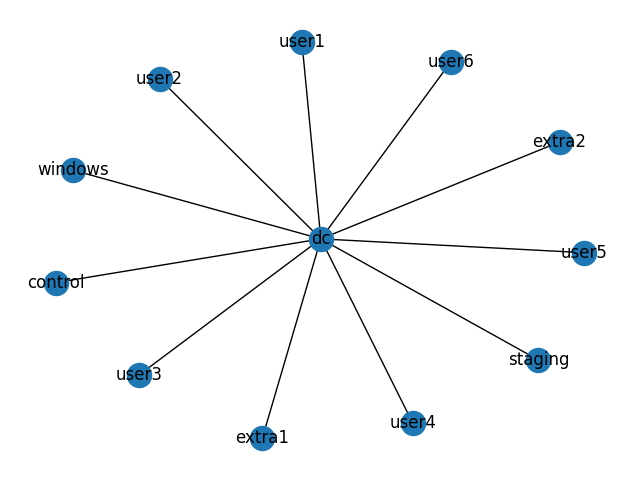

Network Diagram from Inventory

| Index | Host Name | Host Address | OS | Services | Diagram Label |
| 0 | user1 | 192.168.0.2 | Kali | | user1 |
| 1 | user2 | 192.168.0.3 | Kali | | user2 |
| 2 | user3 | 192.168.0.4 | Kali | | user3 |
| 3 | user4 | 192.168.0.5 | Kali | | user4 |
| 4 | user5 | 192.168.0.6 | Kali | | user5 |
| 5 | user6 | 192.168.0.7 | Kali | | user6 |
| 6 | extra1 | 192.168.0.8 | Windows Server 2022 | | extra1 |
| 7 | extra2 | 192.168.0.9 | Windows 10 | | extra2 |
| 8 | control | 192.168.0.10 | Debian 10 | | control |
| 9 | staging | 192.168.0.11 | Debian 10 | | staging |
| 10 | dc | 192.168.0.12 | unspecified windows | domaincontroller, rdp | dc |
| 11 | windows | 192.168.0.13 | unspecified windows | rdp | windows |